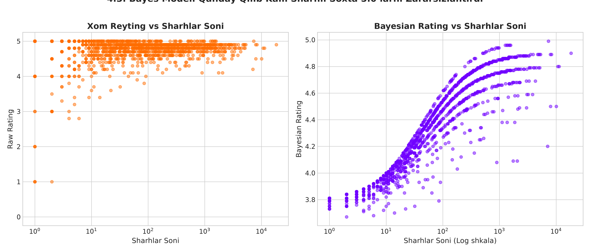
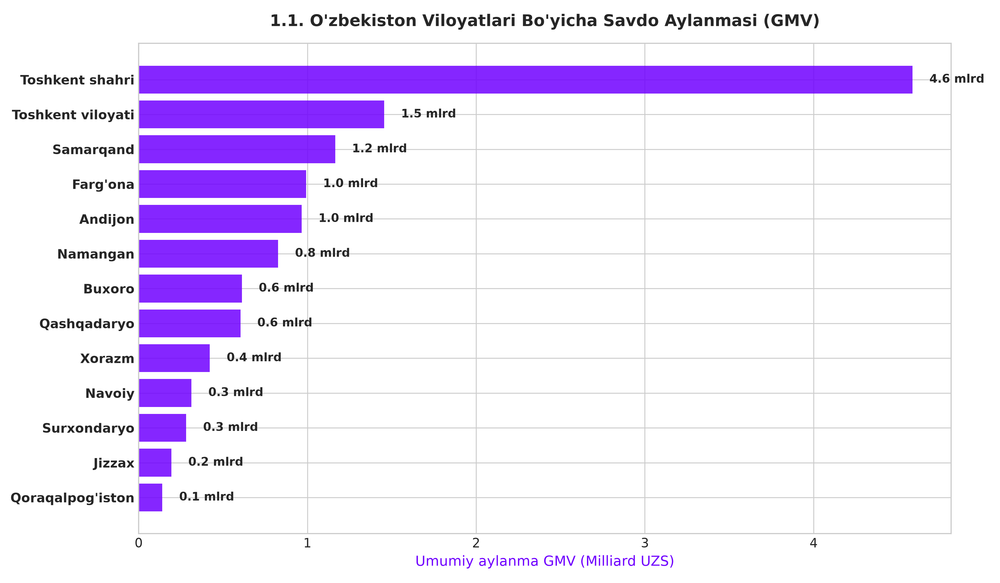
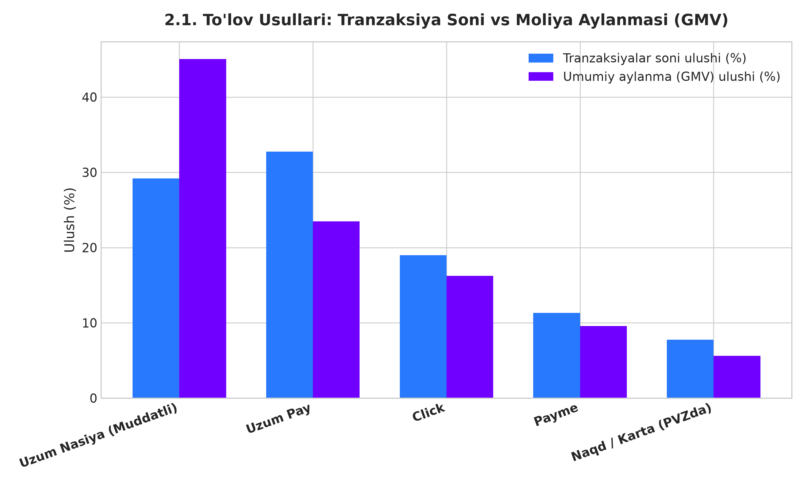
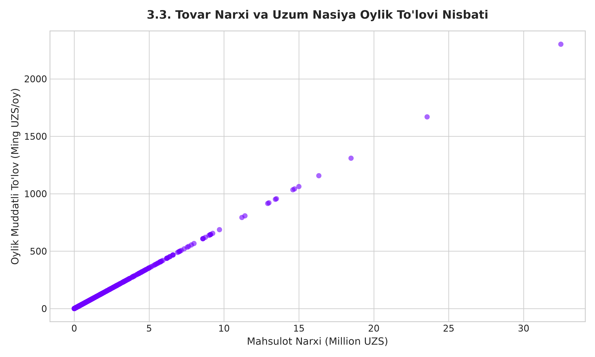
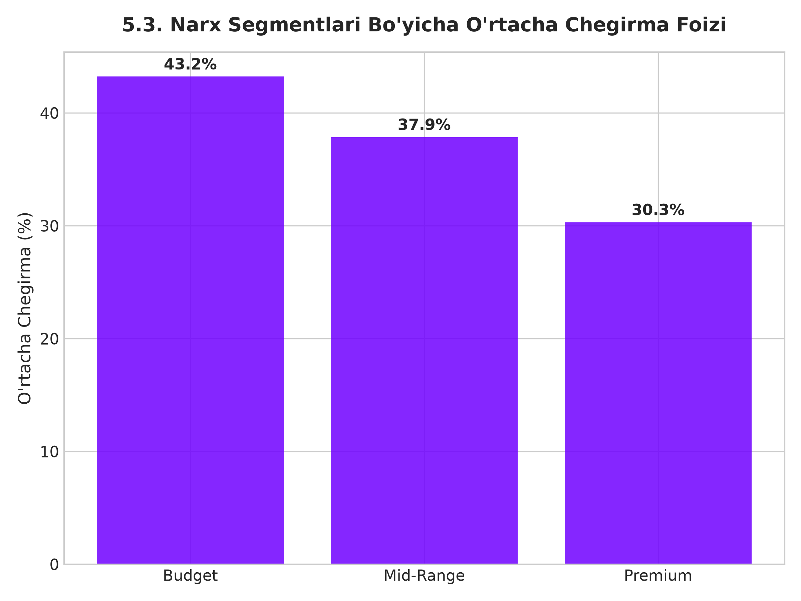
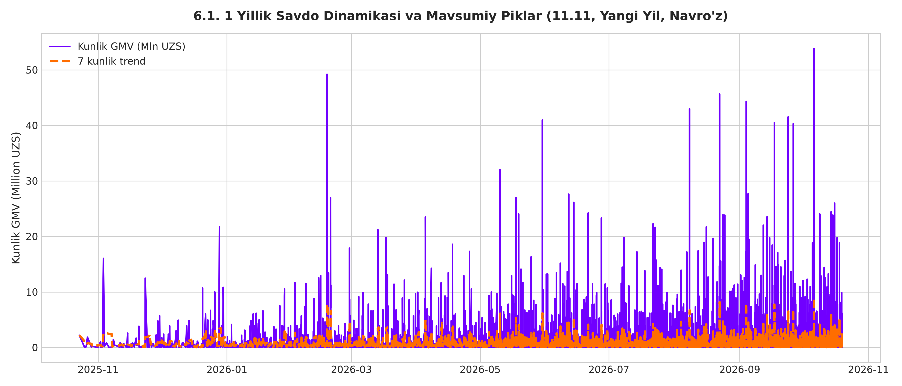
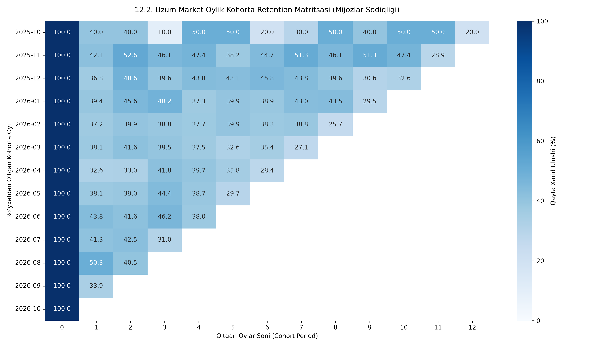
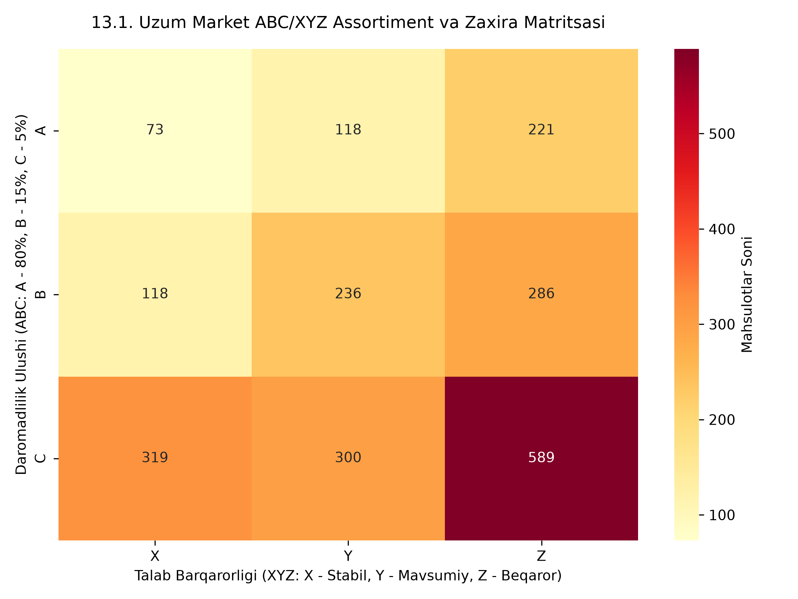
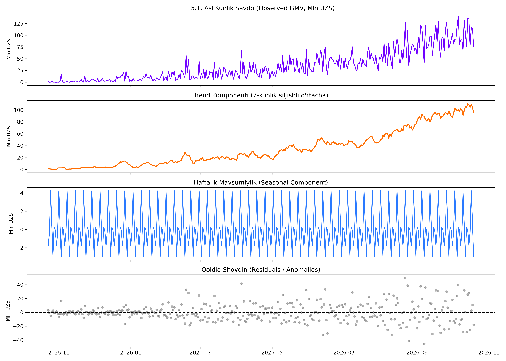

A / Public catalog
Product snapshot
The scraper implementation requests Uzum’s public mobile feed and parses product attributes such as price, rating, and review count.
Source src/data_collection/scraper.py
Snapshot data/raw/uzum_catalog_raw.json
Case study 01Marketplace analytics · Uzbekistan
An end-to-end analytics project exploring the product, customer, and operational questions behind an online marketplace.
Public product catalog snapshot Simulated transaction history
Explore the case studyA system, from source to decision
Catalog → simulation → preparation → analysis → interface. The order and customer history is generated for this project.
01 Project overview
The project follows an analytics lifecycle: collect a product snapshot, construct transaction scenarios where private order data is unavailable, prepare the data, and explore questions about assortment, pricing, customers, and demand.
It is a portfolio study of methods and engineering choices. Transaction-derived results describe the modeled dataset, not Uzum Market’s internal operations.
Counts from stored processed CSV files. Product catalog provenance is represented by the collection code and saved snapshot; exact crawl execution is not independently logged.
The data boundary is part of the method
A / Public catalog
The scraper implementation requests Uzum’s public mobile feed and parses product attributes such as price, rating, and review count.
Source src/data_collection/scraper.py
Snapshot data/raw/uzum_catalog_raw.json
B / Generated history
Because private transaction records are not available here, the generator creates customer profiles, baskets, payment assignments, regions, statuses, and dates from randomized rules.
Source src/data_collection/order_generator.py
Stored output data/raw/uzum_orders_raw.json
Interpretation rule. GMV, payment comparisons, retention, regional patterns, basket associations, and forecast inputs below are calculations on generated transaction history. They are not Uzum internal transaction records or measured marketplace outcomes.
Collect
public catalog feed
Generate
modeled transaction history
Prepare
SQLite, CSV, features
Explore
analytics and experiments
Deliver
Streamlit interface
Project map based on modules in src/data_collection/, src/processing/, src/analytics/, src/models/, and src/dashboard/. It explains structure, not execution status.
From files to analytical features
Five core entities are described in src/database/schema.py: categories, products, customers, orders, and order items.
src/processing/etl_pipeline.py transforms JSON inputs into SQLite tables and processed CSV files. Quality tests cover keys, ranges, references, and totals.
src/processing/feature_builder.py adds Bayesian rating, category-relative price, discount tiers, time flags, and customer RFM base measures.
src/processing/etl_pipeline.py and src/processing/feature_builder.py. Table write behavior and quality checks still require a fresh pipeline run to verify.Catalog and generated order files → ETL normalization and key/range checks → five relational entities → rating, price, time, and customer features. This is a repository map, not a pipeline run record.
These modules and outputs are present. The audit did not execute the pipeline or test suite. ETL uses table replacement when writing with to_sql, so schema constraints and index claims require a fresh database check.
Six questions, one important boundary
The EDA module groups 24 charts into six themes: geography, payment behavior, installment mechanics, rating features, discounts, and time patterns. One selected source figure represents each theme; each transaction-derived view describes generated history, not observed Uzum operations. On narrow screens, scroll charts sideways or open them full size.
Catalog signals · feature engineering

reports/figures/04_03_bayes_vs_raw_scatter.pngThis chart illustrates the feature-engineering choice in src/processing/feature_builder.py. It shows catalog rating/review fields and their smoothed transformation; it does not establish that higher ratings cause more sales. The raw-rating pipeline maps missing values to zero, so the zero cluster also reflects data preparation.
02 / Geography · generated orders

reports/figures/01_01_regional_gmv_volume.pngThe generator sets region weights. Read this as a profile of the simulation inputs and resulting sample, not a market-demand finding.
03 / Payment behavior · generated orders

reports/figures/02_01_payment_method_market_share.pngThe chart compares generated transaction-count and GMV shares. Uzbek labels map to Uzum Nasiya, Uzum Pay, Click, Payme, and cash/card at pickup. Payment assignment probabilities are configured by the order generator, so the mix is a scenario output—not a market estimate or measured payment preference.
04 / Installments · public catalog snapshot

reports/figures/03_03_installment_price_scatter.pngThe scraper extracts digits from public product badges for this comparison. The saved pattern is descriptive; it does not verify financing terms, fees, eligibility, or customer response.
05 / Price and discount · catalog fields

reports/figures/05_03_discount_by_price_segment.pngThe chart groups listed discounts by category-relative price: below 0.70×, 0.70–1.30×, and above 1.30× the category median. It is a catalog comparison, not an estimate of how discounts change demand.
06 / Time patterns · generated transaction history

reports/figures/06_01_daily_sales_timeline.pngDates and seasonal behavior originate in the transaction generator. The upward pattern is not evidence of actual Uzum growth or a validated demand trend.
Statistical methods · no disputed results shown
The implementation contains tests for group differences, categorical association, and ranked relationships. Their saved summary is omitted because its figures conflict with the stored outputs and documentation.
Method map based on src/analytics/hypothesis_testing.py. It describes available procedures, not validated outcomes. Simulated transaction comparisons are not causal evidence.
Other source figures add payment-by-price and payment-by-region heatmaps, delivery comparisons, additional rating distributions, discount-tier and volume views, and campaign or weekday/hour comparisons. Their underlying transaction patterns are generated, and several figures need a fresh label/readability pass before publication.
The statistical methods map below describes Welch’s t-test, Mann–Whitney U, chi-square, and Spearman procedures. The saved summary chart is not used because its reported values conflict with stored outputs and documentation.
Sources: src/analytics/eda_visualizer.py, src/analytics/hypothesis_testing.py, and `docs/stages/09_exploratory_data_analysis.md` / `10_statistical_hypothesis_testing.md`.
Segmentation and repeat-order patterns
The RFM module builds customer-level recency, frequency, and monetary measures from generated orders, then assigns quintile scores. The saved segment chart routes some score combinations to “Others,” despite the stage report’s claim of 11 fully assigned segments, so its distribution is not reproduced here.
Three quintile scores → segment rules
src/analytics/customer_rfm.py. It explains the measures and scoring direction; it is not a customer count or business result.Cohort analysis · generated orders

reports/figures/12_02_cohort_retention_heatmap.pngA cohort is defined by each customer’s first generated order month; later cells show the share with an order in that elapsed month. The cohorts are simulated, recent groups are right-censored, and this is not actual Uzum retention.
A prioritization lens, not an inventory outcome
The product analytics module combines cumulative value classes (ABC) with variability classes (XYZ) to make assortment behavior easier to discuss. It is a framework for prioritization—not proof of reduced stockouts or inventory savings.

reports/figures/13_01_abc_xyz_matrix_heatmap.pngCounts are derived from the project’s available dataset. Class boundaries are documented in Stage 13; the matrix does not establish what a real retailer should stock without actual sales and inventory records.
Market basket method in src/analytics/product_analytics.py. The saved top-rules plot contains very large Lift values and remains unused until support counts and rule behavior are reconciled.
Apriori-style pair rules are available in data/processed/market_basket_rules.csv. Lift describes co-occurrence relative to independence; it is not a recommendation uplift. The saved top-rules graphic has extreme Lift values and is omitted pending support-count review.
Category log-log estimates are stored in data/processed/price_elasticity_by_category.csv. Cross-sectional product comparisons do not identify causal price elasticity. Treat pricing ideas as hypotheses for future experiments.
Method sketch from src/analytics/pricing_engine.py. The saved coefficient figure includes extreme positive and negative values and is omitted pending validation.
Methods and artifacts are present; scores need reconciliation
Time-series method · generated history

reports/figures/15_01_time_series_decomposition.pngThis is a descriptive decomposition of synthetic history. The weekly cycle and upward trend are generated structure; they do not validate the separate 60-day forecast or establish future marketplace demand.
Decomposition and a Gradient Boosting backtest are implemented in src/models/forecasting.py. The stored 60-day CSV is produced by a recent-mean, weekday, and sine heuristic with fixed ±15% bounds. Published WAPE/MAPE values conflict, so no accuracy score or confidence-interval claim is shown.
Three classifiers are compared in src/models/bestseller_classifier.py, with a saved model and ROC/importance images. The README and stage report disagree on the winner and scores; the current split and target also merit leakage review. Results are omitted.
src/models/recommender.py combines TF-IDF similarity and basket co-occurrence with fallback behavior. A model artifact and example figure exist, but no ranking-quality evaluation is recorded. This site does not load the pickle model or present it as production-ready.
Interactive AI lab · offline evidence
One panel checks a bestseller scenario against the classifier’s documented feature requirements. The other browses a small set of precomputed recommender outputs made from this project’s catalog and generated order history.
Data boundary. Product attributes come from the saved catalog snapshot. Basket co-occurrence uses synthetically generated orders; these examples do not use or reveal Uzum’s internal transactions.
01 / Classifier
Input review only · no probability is produced
No model prediction
These controls capture three supported catalog fields. The saved model also requires category-relative price, category frequency, rating and review features, delivery time, and encoded price and discount tiers. Its exact inference schema has not been verified for safe use here.
The classifier target is defined from catalog orders_count. Bestseller results therefore need leakage and generalization review before interpretation.
02 / Hybrid recommender
Precomputed offline output · not live inference
Select a product to inspect its saved result.
The source method blends title/category TF-IDF cosine similarity with normalized basket co-occurrence at equal weight, then ranks the combined score. Similarity is not confidence or recommendation quality. Synthetic baskets shape the co-occurrence signal.
Availability note: the website does not run the saved pickle files. This static lab makes no external API calls, exposes no customer records, and ships only a limited set of catalog-level recommendation examples.
Classification · validation map
Workflow summary based on src/models/bestseller_classifier.py. Candidate ranking and performance remain unreported until the target and split are audited.
Recommendation · hybrid construction
Construction follows src/models/recommender.py. Basket signals come from simulated orders; the diagram describes the code path, not an evaluated ranking or user-facing recommendation result.
A separate analyst-facing interface
The repository includes a five-tab Streamlit application in src/dashboard/app.py. It is a separate project interface and was not launched during this build.
src/dashboard/app.pyst.tabs(); it is not a dashboard screenshot. The app was not run during this build.Docker configuration and test files are present. No successful container build, hosted dashboard, Kaggle publication, or passing test run is claimed on this page.
What the evidence supports
Transaction and customer histories are synthetic. The product snapshot is associated with a public-feed scraper, but a crawl log or reproducible snapshot provenance is not included.
Comparisons, associations, and generated seasonality do not demonstrate causal changes in price response, conversion, customer retention, or sales.
Forecast and classifier reports conflict; stored artifacts were not executed or loaded for this site. Tests, deployment, and external publication remain unverified.
Continue the investigation
The repository is the source-code and documentation reference. The Kaggle link is provided as the dataset-page destination. These links do not imply access to private Uzum transactions.
Source code & documentation
Explore the project repository, Python source code, analytical modules, documented project stages, and available implementation artifacts.
Dataset page
Visit the project’s Kaggle dataset page to inspect its published description and available data resources.
The URLs are included as supplied. Automated URL fetching was unavailable during implementation; verify both destinations before publication.
Both external URLs are defined once in this resource section in web/index.html for straightforward updates.